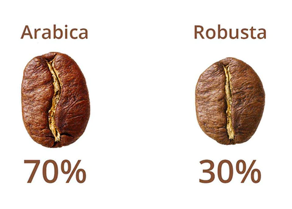

Kahve nedir?
Kahve, coffea isimli ağacın meyvelerinden çeşitli işlemler sonucu çekirdeklerinin ayrılması ve bölgeden bölgeye farklılık gösteren demleme şekilleriyle hazırlanmasıyla elde edilen içecek türüdür. Bu meyvelerin çekirdekleri çeşitli işlemlerden sonra suda demlenerek tüketilir.
Dünyada En Çok Kahve Üreten Ülkeler
- Brezilya
- Vietnam
- Kolombiya
- Endonezya
- Etiyopya


Kahve Çekirdeği Türleri
Kahve çekirdeği dünya genelinde sayamayacağımız kadar çok türü bulunan bir bitkidir fakat yetişitirilen ve ilgi gören üç türden bahsedebiliriz: Arabica, Robusta ve Liberica. Bu türler arasında Liberica sınırlı bir bölgede çok az miktarda üretildiği için ticareti fazla yapılmasa da Arabica ve Robusta çekirdekler en çok yetiştirilen ve tüketilen kahve çekirdekleridir.
Kahve nasıl yapılır?
Başlarda yalnızca french pressin ilk haliyle yapılan filtre kahve, zamanla yeni buluş ve eklemelerle birçok farklı yöntemle yapılabilen bir kahve türüne dönüştü. Bu farklı yöntemler filtre kahvenin hem aromasını değiştiriyor, hem de kişinin bulunduğu şartlara göre kolaylık sağlayabiliyor.